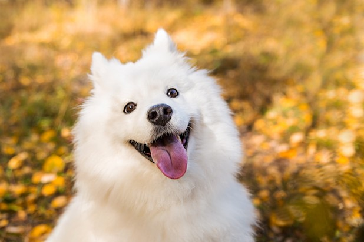
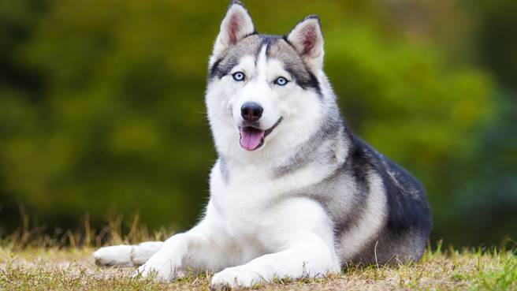

黃金獵犬

黃金獵犬是一種友好、智慧的犬種，適合家庭生活。它們對小孩特別有耐心，是極佳的伴侶犬。
薩摩耶
薩摩耶以其可愛的笑容和厚實的白色毛皮著稱，性格活潑且友善，喜歡與人互動。
哈士奇
哈士奇是一種強壯而富有活力的犬種，原本用於拉雪橇。它們聰明且獨立，常常需要大量的運動。
黃金獵犬是一種友好、智慧的犬種，適合家庭生活。它們對小孩特別有耐心，是極佳的伴侶犬。
薩摩耶以其可愛的笑容和厚實的白色毛皮著稱，性格活潑且友善，喜歡與人互動。
哈士奇是一種強壯而富有活力的犬種，原本用於拉雪橇。它們聰明且獨立，常常需要大量的運動。